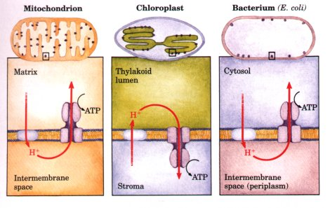
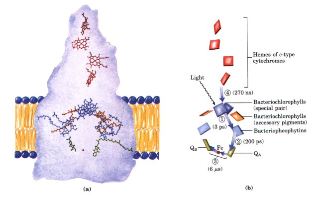
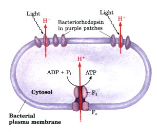

We have now seen how one of the two energy-rich products formed in the light reactions, NADPH, is generated by photosynthetic electron transfer from H2O to NADP+. What about the other energy-rich product, ATP?
| In 1954 Daniel Arnon and his colleagues discovered that ATP is generated from ADP and Pi during photosynthetic electron transfer in illuminated spinach chloroplasts. Support for these findings came from the work of Albert Frenkel who detected light-dependent ATP production in membranous pigment-containing structures called chromatophores, derived from photosynthetic bacteria. They concluded that some of the light energy captured by the photosynthetic systems of these organisms is transformed into the phosphate bond energy of ATP. This process is called photophosphorylation or photosynthetic phosphorylation, to distinguish it from oxidative phosphorylation in respiring mitochondria. |
Recall that oxidative phosphorylation of ADP to ATP in mitochondria occurs at the expense of the free energy released as high-energy electrons flow downhill along the electron transfer chain from substrates to O2. In a similar way, photophosphorylation of ADP to ATP is coupled to the energy released as high-energy electrons flow down the photosynthetic electron transfer chain from excited photosystem II to the electron-deficient photosystem I. The direct effect of electron flow is the formation of a proton gradient, which then provides the energy for ATP synthesis by an ATP synthase.
ATP synthesis in chloroplasts can be coupled to two types of electron flow-cyclic and noncyclic-as we shall see. We will also turn our attention to photophosphorylation in organisms other than green plants, and to the possible bacterial origins of chloroplasts. The chapter concludes with the development of an overall equation for photosynthesis in plants.
Several properties of photosynthetic electron transfer and photophosphorylation in chloroplasts show a role for a proton gradient as in mitochondrial oxidative phosphorylation: (1) the reaction centers, electron carriers, and ATP-forming enzymes are located in a membrane-the thylakoid membrane; (2) photophosphorylation requires intact thylakoid membranes; (3) the thylakoid membrane is impermeable to protons; (4) photophosphorylation can be uncoupled from electron flow by reagents that promote the passage of protons through the thylakoid membrane; (5) photophosphorylation can be blocked by venturicidin and similar agents that inhibit the formation of ATP from ADP and Pi by ATP synthase of mitochondria (see Fig. 18-13); and (6) ATP synthesis is catalyzed by F0F1 complexes, located on the outer surface of the thylakoid membranes, that are very similar in structure and function to the F0F1 complexes of mitochondria.
Electron-transferring molecules in the connecting chain between photosystem II and photosystem I are oriented asymmetrically in the thylakoid membrane, so that photoinduced electron flow results in the net movement of protons across the membrane, from the outside of the thylakoid membrane to the inner compartment (Fig. 18-45).
| In 1966 Andre Jagendorf showed that a pH gradient across the thylakoid membrane (alkaline outside) could furnish the driving force to generate ATP. Jagendorf's early observations provided some of the most important experimental evidence in support of Mitchell's chemiosmotic hypothesis. In the dark, he soaked chloroplasts in a pH 4 buffer, which slowly penetrated into the inner compartment of the thylakoids, lowering their internal pH. He added ADP and Pi to the dark suspension of chloroplasts and then suddenly raised the pH of the outer medium to 8, momentarily creating a large pH gradient across the membrane. As protons moved out of the thylakoids into the medium, ATP was generated from ADP and Pi. Because the formation of ATP occurred in the dark (with no input of energy from light), this experiment showed that a pH gradient across the membrane is a highenergy state that can, as in mitochondrial oxidative phosphorylation, mediate the transduction of energy from electron transfer into the chemical energy of ATP. |
The stoichiometry for this process (protons transported per electron) is not well established. Electron transfer between photosystems II and I through the cytochrome bf complex contributes to the proton gradient an amount of proton-motive force roughly equivalent to one to two ATP formed per pair of electrons.
The enzyme responsible for ATP synthesis in chloroplasts is a large complex with two functional components, CF0 and CFl (the C denoting chloroplast origin). CF0 is a transmembrane proton pore composed of several integral membrane proteins and is homologous with mitochondrial F0. CFl is a peripheral membrane protein complex very similar in subunit composition, structure, and function to mitochondrial F1 (Table 18-8). Together these proteins constitute the ATP synthase of chloroplasts. (Bacteria also contain ATP synthases remarkably similar in structure and function to those of chloroplasts and mitochondria (Table 18-8).)

Electron microscopy of sectioned chloroplasts shows ATP synthase complexes as knoblike projections on the outside (stromal) surface of thylakoid membranes; these correspond to the ATP synthase complexes seen to project on the inside (matrix) surface of the inner mitochondrial membrane (see Fig. 18-15). Thus both the orientation of the ATP synthase and the direction of proton pumping in chloroplasts are opposite to those in mitochondria. In both cases, the Fl portion of ATP synthase is located on the more alkaline side of the membrane through which protons flow down their concentration gradient; the direction of proton flow relative to F1 is the same in both cases (Fig. 18-46).
 |
Figure 18-46 Comparison of the topology of proton movement and ATP synthase orientation in the membranes of mitochondria, chloroplasts, and the bacterium E. coli. In each case, the orientation of the proton gradient relative to the ATP synthase is the same. |
The mechanism of chloroplast ATP synthase is also believed to be essentially identical to that of its mitochondrial analog; ADP and Pi readily condense to form ATP on the enzyme surface, but the release of this enzyme-bound ATP requires a proton-motive force (see Fig. 1823). As for the mitochondrial ATP synthase, the details of this mechanism remain to be determined.
There is an alternative path of light-induced electron flow that allows chloroplasts to vary the ratio of NADPH and ATP formed during illuminations; this is called cyclic electron flow to differentiate it from the normally unidirectional or noncyclic electron flow that proceeds from H2O to NADP+, as we have discussed thus far. Cyclic electron flow involves only photosystem I (Fig. 18-44). Electrons passed from P700 to ferredoxin do not continue to NADP+, but move back through the cytochrome bf complex to plastocyanin. Plastocyanin donates electrons to P700, the illumination of which promotes electron transfer to ferredoxin. Thus illumination of photosystem I can cause electrons to cycle continuously out of the reaction center of photosystem I and back into it, each electron being propelled around the cycle by the energy yielded by absorption of one photon. Cyclic electron flow is not accompanied by net formation of NADPH or the evolution of O2. However, it is accompanied by proton pumping and by the phosphorylation of ADP to ATP, referred to as cyclic photophosphorylation. The overall reaction equation for cyclic electron flow and photophosphorylation is simply

Cyclic electron flow and photophosphorylation are believed to occur when the plant cell is already amply supplied with reducing power in the form of NADPH but requires additional ATP for other metabolic needs. By regulating the partitioning of electrons between NADP+ reduction and cyclic photophosphorylation, a plant adjusts the ratio of NADPH and ATP produced in the light reactions to match the needs for these products in the carbon fixation reactions and in other energy-requiring processes.
Like mitochondria, chloroplasts contain their own DNA and proteinsynthesizing machinery. Some chloroplast proteins are encoded by chloroplast genes and synthesized in the chloroplast; others are encoded by nuclear genes, synthesized outside the chloroplast, and imported. When plant cells grow and divide, chloroplasts give rise to new chloroplasts by division, during which their DNA is replicated and divided between daughter chloroplasts.
Cyanobacteria are photosynthetic prokaryotes (formerly called blue-green algae) in which the machinery and mechanism for light capture, electron flow, and ATP synthesis are similar in many respects to those in the chloroplasts of higher plants. The bacteriumlike division of chloroplasts, and their similarities to cyanobacteria in photosynthetic components and mechanisms, support the hypothesis that chloroplasts arose during evolution from endosymbiotic prokaryotes that also gave rise to modern cyanobacteria (see Fig. 2-17). Studies of photosynthesis in lower eukaryotes and prokaryotes may therefore yield insight into photosynthetic mechanisms that is generalizable to the higher plants.
Photosynthesis occurs not only in green plants but in lower eukaryotic organisms such as algae, euglenoids, dinoflagellates, and diatoms, and also in certain prokaryotes. The photosynthetic prokaryotes include the cyanobacteria, the green sulfur bacteria found in mountain lakes, the purple bacteria common in the ocean, and the purple sulfur bacteria of sulfur springs. The cyanobacteria, found in both fresh and salt waters, are perhaps the most versatile of photosynthetic organisms. Because they can also iix atmospheric nitrogen (Chapter 21), cyanobacteria are among the most self sufficient organisms in the biosphere. At least half of the photosynthetic activity on earth occurs in the many different microorganisms that constitute the phytoplankton in oceans, rivers, and lakes.
With the exception of the cyanobacteria, which have an 02-producing photosynthetic system resembling that of plants, photosynthetic bacteria do not produce O2. Many are obligate anaerobes that cannot tolerate O2. Some photosynthetic bacteria use inorganic compounds as hydrogen donors. For example, the green sulfur bacteria use hydrogen sulfide, according to the equation

These bacteria, instead of giving off molecular O2, produce elemental sulfur as the oxidation product of H2S. Other photosynthetic bacteria use organic compounds as hydrogen donors, for example, lactate:

Plant and bacterial photosynthesis are fundamentally similar processes despite the differences in the hydrogen donors they employ. This similarity becomes obvious when the equation of photosynthesis is written in a more general form:

in which H2O symbolizes a hydrogen donor and D is its oxidized form. H2D thus may be water, hydrogen sulfide, lactate, or some other organic compound, depending upon the species.
The three-dimensional structure of the photoreaction center of a photosynthetic bacterium, Rhodopseudomonas viridis, which is analogous in some ways to photosystem II in higher plants, is known from x-ray crystallographic studies (Fig. 18-47). This structure sheds light on how phototransduction takes place in the bacterium, and presumably in higher plants as well.
The bacterial reaction center has four types of proteins: a c-type cytochrome, two subunits (L and M) associated with bacteriochlorophyll, and a fourth protein, the H subunit. A single reaction center contains f'our hemes (cytochromes), four bacteriochlorophylls that are similar to the chlorophylls of chloroplasts, two bacteriopheophytins, one inorganic Fe, and a quinone. From a variety of physical studies, the extremely rapid sequence of events shown in Figure 18-47b has been deduced.
A pair of closely spaced bacteriochlorophylls (the "special pair") constitutes the site of the initial photochemistry in the bacterial reaction center. The "electron hole" that develops in the chlorophyll is filled with electrons from the c-type cytochrome, a role played by H20 in photosystem II of higher plants.
The bacteriochlorophylls, bacteriopheophytins, and quinone are held rigidly in a fixed orientation relative to each other by the proteins of the reaction center. The photochemical reactions among these components therefore take place in a virtually solid state, accounting for the high efficiency and rapidity of the reactions; nothing is left to chance collision or dependent upon random diffusion.
Although the reaction centers of plants have not yet been seen in such detail, the similarities between the bacterial and eukaryotic reaction centers suggest that the principles deduced from studies of the geometry and mechanism of the bacterial reaction center will also apply to the reaction centers of plants.

Figure 18-47 The purple sulfur
bacterium Rhodopseudomonas uiridis performs light-driven ATP
synthesis using machinery closely similar to photosystem II of
higher plants, although the bacterium has no analog of
photosystem I. (a) Superimposed on the structure of the reaction
center proteins (see Fig. 10-11) are the prosthetic groups that
participate in the photochemical events. There are four molecules
of bacteriochlorophyll, two of which (the "special
pair," dark blue) constitute the site of the first
photochemical changes after light absorption. The other two
bacteriochlorophylls (orange)
are called accessory pigments; their role in the photochemical
events is not well understood. Two bacterial pheophytins (light
blue) lie beneath the bacteriochlorophylls, and beneath them, two
bacterial quinones, QA and QB (green), separated by a nonheme
iron atom (red). Shown at the top of the figure are four heme
groups (red) associated with ctype cytochromes of the reaction
center. (b) The sequence of events that occurs upon excitation of
the special pair of bacteriochlorophylls and the time scale of
the electron transfers (in parentheses). The excited special air
passes an electron to bacteriopheophytin (1), from which the
electron moves rapidly to the tightly bound quinone QA (2) . This
quinone much more slowly passes electrons to the diffusible
quinone QB through the non-heme iron atom (3) . Meanwhile, the
"electron hole" in the special pair is filled by an
electron from one of the hemes of the four c-type cytochromes (4).
The halophilic ("salt-loving") bacterium Halobacterium halobium conserves energy derived from absorbed sunlight by an interesting variation on the principle employed by true photosynthetic organisms. These unusual bacteria live only in brine ponds and salt lakes (Great Salt Lake and the Dead Sea, for example), where the high salt concentration results from water loss by evaporation; indeed, they cannot live in NaCl concentrations lower than 3 M. Halobacteria are aerobes and normally use O2 to oxidize organic fuel molecules. However, the solubility of O2 is so low in brine ponds, in which the NaCl concentration may exceed 4 M, that these bacteria must sometimes call on another source of energy, namely sunlight. The plasma membrane of H. halobium contains patches of light-absorbing pigments, called purple patches. These patches are made up of closely packed molecules of the protein bacteriorhodopsin (see Fig. 10-10), which contains retinal (vitamin A aldehyde; see Fig. 9-18) as a prosthetic group. When the cells are illuminated, the bacteriorhodopsin molecules are excited by an absorbed photon. As the excited molecules revert to their initial ground state, an induced conformational change results in the release of protons outside the cell, forming an acid-outside pH gradient across the plasma membrane. Protons tend to diffuse back into the cell through an ATP synthase complex in the membrane, very similar to that of mitochondria and of chloroplasts, supplying the energy for ATP synthesis (Fig. 18-48). Thus halobacteria can use light to supplement the ATP synthesized by oxidative phosphorylation with the O2 that is available. However, halobacteria do not evolve O2, nor do they carry out photoreduction of NADP+; their phototransducing machinery is therefore much simpler than that of cyanobacteria or higher plants.
Bacteriorhodopsin, with only 247 amino acid residues, is the simplest light-driven proton pump known. The determination of its molecular structure should yield important insights into light-dependent energy transduction and the action of the proton pumps that function in respiration and photosynthesis.
 |
Figure 18-48 Light-driven proton currents in Halobacterium halobium provide the proton-motive force for ATP synthesis. Illumination of the phototransducing protein bacteriorhodopsin results in outward proton movement, generating a protonmotive force. Reentry of protons through the F0F1 complex provides the energy for ATP synthesis. |
The standard free-energy change for the synthesis of glucose from CO2 and H2O during photosynthesis by the reaction
| 6 CO2+6 H2O | light |
C6H12O6 + 6 O2 | ............(18-9) |
is 2,840 kJ/mol. (Recall that oxidation of glucose by the reverse of this equation proceeds with a decrease of 2,840 kJ/mol.) Now let us compare this energy requirement with the energy yielded by the light reactions of plant photosynthesis.
Recall that two photons must be absorbed, one by each photosystem, to cause flow of one electron from H2O to NADP+. To generate one molecule of O2, four electrons must be transferred. Therefore, production of six molecules of O2 (as in Eqn 18-9) requires the absorption and use of 48 photons: (2 photons/e-)(4e-/O2)(6 02) = 48 photons. Because the energy of one einstein may range from 300 kJ at 400 nm to about 170 kJ at 700 nm (Fig. 18-35), anywhere from 8,160 to 14,400 kJ (depending upon the wavelength of the absorbed light) is required under standard conditions to make 1 mol of glucose "costing" 2,840 kJ.
In the next chapter we turn to a consideration of the carbon fixation reactions by which photosynthetic organisms use the ATP and NADPH produced in the light reactions to carry out the reduction of CO2 to carbohydrates.